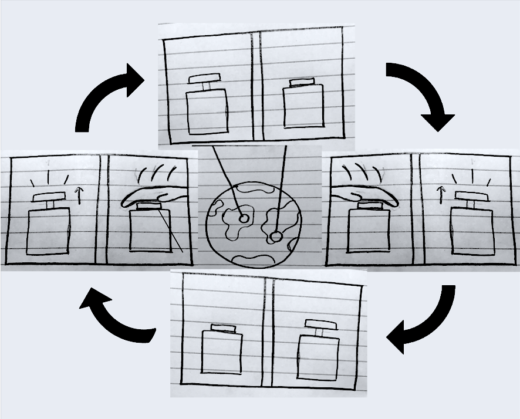
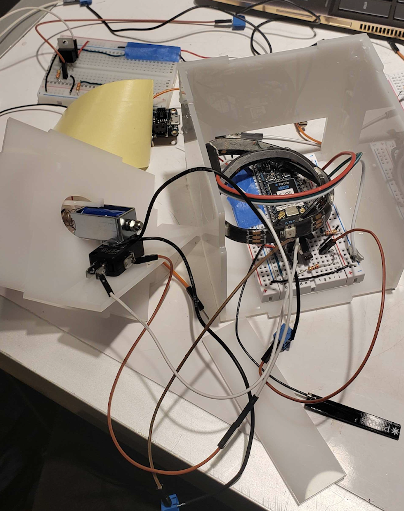

Popup Box is a creative way to communicate with those you have a competitive relationship with over long distances. The goal of this project was to design and prototype a device that could maintain relationships.
Our solution was to have two buttons. The goal is to keep the button in the off position where it is pushed down. When a person presses their button down, the other person’s button pops up. The other person has to push it down and return their button to the off position as soon as possible. This lets users (friends, uber-competitive siblings, arch nemeses, etc…) stay in touch in a fun way that keeps their competitive sides alive.
You can watch a video demo here
We began by thinking of different types of relationships - competetive, romantic, etc. Then, we thought of ways we could foster these relationships with games or reminder systems. After our brainstorming session, we decided to go further with our Popup Box idea.
There were two main components to this project. My group had to build a button system that could automatically pop up and down. We used a solenoid electromagnet to control this action. We also had to create a shared netword for the buttons to communicate with each other. We did this using Argon microprocessors.
I developed the code that connected the two buttons, wired the solenoids to activate on command.
You can find the full documentation of our project here.